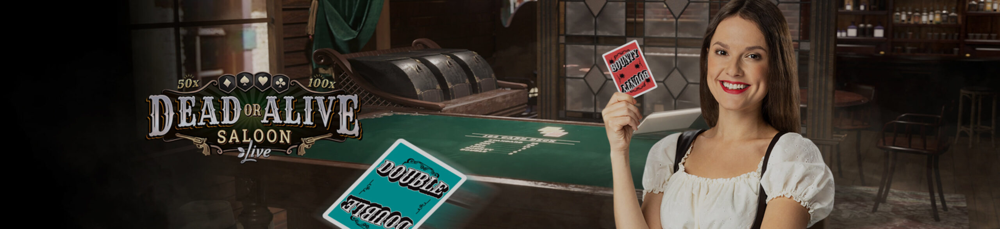
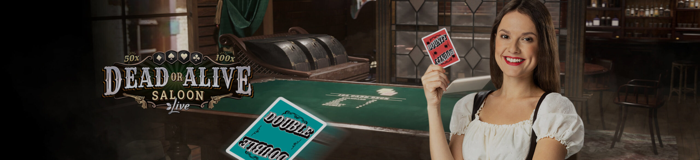
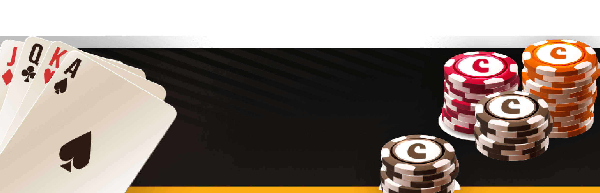
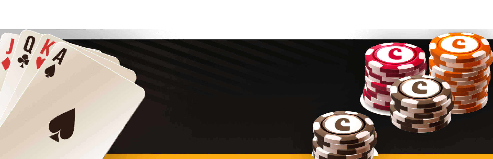

Processo de Registo
Quer se inscrever no CasiBom? O processo é muito fácil e prático. Com alguns cliques e em alguns momentos torna-se cliente da plataforma de apostas online de Portugal. Em seguida, siga como se registar e obter uma conta para que possa começar a apostar em jogos de desportos e casino.
Como Criar a Conta?
O processo de criar uma conta e tornar-se cliente da Casibom é muito simples e qualquer pessoa, com habilidade ou não com tecnologia, pode fazê-lo.
- 1 – Aceda ao site oficial da CasiBom e clique na opção ‘Registar’, que está localizada no topo do site.
- 2 – Preencha o formulário online com as informações solicitadas, tais como nome próprio, apelido, e-mail, senha, contacto com o telemóvel e escolha a moeda que pretende utilizar.
- 3- Confirme que tem 18 anos ou mais
- 4- Confirme que leu os termos e condições
- 5- Clique para se registar.
Verificação da Conta
Após o registo, os novos clientes da CasiBom devem verificar a conta criada. A ação consiste no envio de documentação que comprove que os dados reportados no momento do registo são verdadeiros.
A documentação requerida deve ser submetida no formato solicitado na plataforma. Verifique as instruções e verifique rapidamente a verificação da conta.
CasiBom Login – Começa a Divertir-te com os teus Jogos Favoritos
Se o registo com o CasiBom for rápido e prático, o login é ainda mais fácil. Depois de aceder ao site oficial da Casibom, clique na opção ‘Entrar’. Em seguida, informe o seu endereço de e-mail utilizado no momento do registo e senha nos campos solicitados. Pronto, pronto! Em breve será direcionado para a sua conta e poderá navegar nas categorias de jogos disponíveis para apostar e divertir-se.
Bónus de Boas-vindas Exclusivo
Novos jogadores inscritos no CasiBom são elegíveis para receber bónus de boas-vindas desportivas e bónus de boas-vindas ao casino. Ambos os bónus têm 3 estágios, todos através de depósitos.
A distribuição é feita da mesma forma para as duas categorias de bónus, com os jogadores com direito a recompensas nos três primeiros depósitos. Os bónus de boas-vindas são divididos da seguinte forma:
- Bónus boas-vindas- Bónus de 100% relativo ao valor depositado, com um limite de até 500€
- Bónus boas-vindas – Bónus de 50% pelo valor depositado, com um limite de até 500€.
- Bónus boas-vindas – Bónus de 50% pelo valor depositado, com um limite de até 500€.
Para receber o bónus, os clientes devem ativar a promoção antes de então fazer o primeiro depósito. Para reclamar, aceda à opção ‘ofertas’ na sua conta e escolha a opção de ‘subscrição’ no tipo de bónus que pretende. O valor mínimo para os novos clientes da Casibom poderem ser elegíveis para a promoção é de 10€ tanto para o desporto como para o casino.
Antes de desencadear o bónus de boas-vindas que deseja, confira o rollover para cada bonificação e outras regras estabelecidas nos termos e condições.
Avaliação do Casino
Para quem gosta de se aventurar em jogos de casino, no CasiBom Casino encontrará um enorme catálogo com centenas de opções de jogo. Existem inúmeros títulos de slots tradicionais, como jackpot ou Megaways, e jogos de mesa como o famoso blackjack, poker, roleta, baccarat e outros.
Os jogos de casino encontrados na CasiBom são fornecidos por 36 fornecedores com grande reputação no mercado de desenvolvimento de jogos online. Entre os parceiros podemos destacar Playson, Red Tiger, Fugaso e outros.
Máquinas de Slot
Dos jogos de casino disponíveis pela CasiBom, as slots são as especialidades. Há centenas de títulos para a maioria dos perfis de jogadores para escolher jogar e divertir-se. Na plataforma existem slots tradicionais, slots com linhas de pagamento variadas, com jackpots e muitas outras mecânicas que os amantes deste tipo de jogo certamente gostarão.
Aqui estão dois exemplos de máquinas slots que podem ser encontradas na Luckia Portugal: Gonzo’s Quest: este é uma slot com tema de aventura; Starburst: esta é uma slot machine colorida com um tema futurista.
Jogos de Mesa
Na secção de jogos de mesa de CasiBom encontrarás mais de 200 títulos. Entre as opções estão várias versões de roleta, blackjack, baccarat, poker, dados, vídeo bingo e muitas outras.
Poker
No CasiBom Portugal, os jogadores de poker têm boas versões do famoso jogo de cartas para desfrutar. Basta aceder à secção do casino na plataforma e clicar em jogos de mesa. Na página, você pode pesquisar e conferir os títulos de poker disponíveis.
Roleta
Americano, francês ou europeu. Todas as versões de jogos de roleta você pode encontrar no casino online de CasiBom. Existem títulos interessantes disponíveis para você escolher e tentar a sua sorte.
Blackjack
Na Casibom também podes encontrar várias versões de jogos de blackjack para jogar e testar as tuas estratégias. Os títulos deste jogo de cartas podem ser encontrados na página de jogos de mesa. Basta acessar e escolher um tipo para jogar.
Jogos de Casino Ao Vivo
CasiBom tem uma secção de casino ao vivo onde os jogadores podem experimentar um pouco da atmosfera de um casino real. Existem muitas opções de roleta, poker, baccarat e blackjack para você escolher jogar e se divertir como se estivesse presente na casa de jogos.
Um dos diferenciais do casino ao vivo é a presença dos chamados dealers, que atuam como apresentadores dos jogos e são responsáveis pelo comando das rondas de apostas. Os dealers são pessoas reais e promovem uma interação ao vivo que torna a experiência ainda mais deliciosa e divertida. Entretanto, os jogos de casino ao vivo ainda não são permitidos em Portugal. Por esta razão, os jogadores portugueses não podem acessar o casino ao vivo do CasiBom.
Opções de Apostas Desportivas
A secção de desportos da CasiBom está cheia de modalidades para fazer apostas e divertir-se. Existem mais de 30 categorias, com destaque para o futebol, uma das mais procuradas, e outras como basquetebol, voleibol, ténis, futsal, basebol, hóquei no gelo e muitas outras.
Para fazer apostas no desporto, basta ir ao site da CasiBom e clicar em Desporto. Na página encontrará uma diversidade de eventos e jogos, com excelente cobertura feita pela casa de apostas.
Mercados Desportivos
A CasiBom online conta com um mercado desportivos repleto de opções de apostas. São dezenas de opções para os jogadores escolherem fazer palpites e tentar faturar boas vitórias.
No futebol, por exemplo, são vários os mercados para apostar que não estão a se limitar apenas em empate, vitória ou placar exacto. É possível palpitar nos golos, tiros de canto, cartões e outras alternativas.
Tipos de Apostas
O mercado desportivo da Casibom permite aos apostadores colocar vários tipos de apostas, quer sejam palpites tradicionais ou mais estratégicos.
As chamadas Apostas Moneyline, por exemplo, são as mais comuns. Neste caso, o jogador palpita os resultados tradicionais da vitória ou do empate de uma equipa.
A desvantagem europeia é outro tipo de aposta bem posicionada, na qual as apostas são colocadas na diferença de golos/pontos de uma equipa no adversário.
Em Casibom também pode colocar over/Under Bets quando o palpite é sobre a quantidade total de golos/pontos na partida.
Cashout
Cashout é uma funcionalidade que permite ao apostador fechar a sua aposta antes do final da partida, possibilitando receber o lucro obtido até o momento na aposta sem ter de esperar pelo final.
Apostas ao Vivo
Na Casinbom.com, os fãs de desporto podem fazer apostas ao vivo a qualquer momento. A casa tem uma secção exclusiva para este tipo de aposta que é bem procurada pelos clientes para fornecer funcionalidades e ferramentas que ajudam a construir apostas com mais chances de sucesso.
Ao optar por fazer apostas ao vivo, o jogador pode aceder à informação sobre os momentos dos jogos, pois é possível fazer palpites com os duelos já em curso. Assim, você pode usar estatísticas, verificar o tempo do jogo e outras informações para ser capaz de fazer previsões mais assertivas
E-Sports Apostas
CasiBom também pensou nos amantes de eSportes e oferece a modalidade para quem gosta de apostar em jogos eletrónicos.
Para encontrar as opções dos jogos de eSports, o jogador deve aceder à secção desportiva. A categoria estará entre as opções do desporto. No momento da nossa análise, a casa tinha 8 tipos de jogos, destacando o contra-ataque, League of Legends e Valorant.
Probabilidades de Apostas
O CasiBom tem boas probabilidades em comparação com outras plataformas de apostas desportivas. Para aqueles que gostam de arriscar com palpites em odds, vale sempre a pena verificar os mercados de apostas ao vivo, que devido a situações de jogo geralmente contam com probabilidades muito atrativas.
Em suma, as probabilidades das plataformas estão dentro do nível de mercado e podem render bons prémios.
Opções Bancárias
As opções bancárias disponíveis no CasiBom são algumas das mais populares entre os jogadores portugueses. Ao efetuar as suas ações de depósito ou levantamento, os jogadores podem escolher entre multibanco, Neteller, Skrill, transferência bancária e outros métodos de pagamento.
Opções de Depósito
Para explorar depósitos na sua conta CasiBom legal, as opções do sistema disponíveis são: Multibanco, Skrill e Neteller.
O valor mínimo e máximo dos depósitos varia de acordo com o método escolhido. No Multibanco, o mínimo é de 5 euros e um máximo de 5000 euros. Na Neteller e na Skrill, os valores são de 10 euros até 1000.
Métodos de Levantamento
Para levantamento dos ganhos obtidos, os utilizadores da Casibom podem escolher entre transferência bancária e Skrill. O limite de levantamento por transferência bancária é de 5 a 1000 euros, enquanto em Skrill é de 20 a 500 euros.
Segurança e Licença
Operado pela Seguri N.V, o casibom.com é uma plataforma totalmente segura e legalizada. A empresa opera sob a licença de jogo n.º 8048/JAZ2020-032, emitida pelo governo de Curaçao, o organismo responsável pela supervisão e regulação da atividade dos jogos online.
Além de contar com licença adequada para operar no mercado de apostas, a CasiBom também é segura porque tem a sua plataforma desenvolvida com sistemas de segurança de alto padrão, como mecanismos de encriptação de dados que garantem a confidencialidade e proteção da informação dos seus utilizadores. A plataforma também fornece uma política de jogo responsável e é proibida para menores de 18 anos.
Usabilidade do Site
A estrutura do website CasiBom tem um layout agradável, com um menu bem localizado, claro e com informação objetiva. Navegar na plataforma é muito fácil, porque o site é fluido e sem apresentar qualquer tipo de problema.
O site da empresa também é responsivo, o que permite que seja acedido por qualquer dispositivo móvel, algo positivo para quem gosta da praticidade de apostar com telemóveis, por exemplo.
Apoio Ao Cliente
O Apoio ao Cliente da Casibom tem serviços feitos através dos contactos chat ao vivo, e-mail de suporte e formulário eletrónico.
O serviço via chat acontece todos os dias, com serviço rápido. Para quem quer usar o e-mail, o e-mail é: support@casibom.com.
Existe também a opção de clicar em ‘contatar-nos’, localizado quase no rodapé do site, e ser direcionado para um formulário online no qual pode preencher com a sua pergunta ou pergunta. A plataforma não conta com número de telefone.
Conclusão
Após a nossa Análise da Casibom, concluímos que a plataforma de apostas desportivas e casino oferece um bom serviço aos seus utilizadores, com um catálogo completo de jogos, várias funcionalidades úteis, boas promoções de bónus e outros benefícios.
Um aspeto que pode ser melhorado é a expansão da oferta de métodos de depósito e retirada oferecidos pelo operador, para que os apostadores tenham mais opções.
Além disso, o Casino é uma boa plataforma de apostas online, que vale a pena conhecer e desfrutar dos seus serviços.
Entrar 

 
